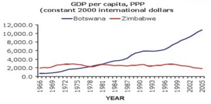
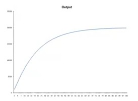
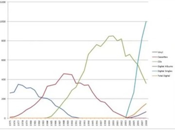

Introduction to growth
Exponential growth is accumulating over time like interest. It is possible to make primitive models for economic growth. These models show that without innovation, growth stops. Solow’s growth model allows for innovation and shows how innovation has a multiplier effect on our collective well-being. Extensions to these models can be used to explain why some countries are successful while others aren’t, and what enables economic growth.

The gross domestic product (GDP) is the market value of all goods and services produced in an economy. We want to know what causes growth. e.g., Botswana did much better than Zimbabwe. The economists Daron Acemoglu and James Robinson wrote a book named [@acemoglu2012nations] Why Nations Fail that focuses on the question why some countries like Zimbabwe do so badly.
Economists often talk about real changes in GDP. Real means that inflation is taken into account. The economy is measured in currency, e.g. dollars. If the economy grows by 5% in dollars but the inflation is 3%, then this increased amount of dollars is worth less.
An important question is whether or not super high levels of economic growth are sustainable. China has had growth rates of around 10% for 15 years. Japan had similar growth rates in the 1960s, and they remained high in the 1970s and 1980s. Japan’s growth rates fell after the country caught up with the rest of the world.
Economic growth often doesn’t look like simple exponential growth. First economic growth can be high, and then it tends to fall. That is because investments are made in machinery and technologies, and they depreciate over time, so that prevents the economic growth curve from becoming exponential. Only innovation can shift the whole curve up.
Economic growth is focused on material things. Does material wealth really matter, in the sense that it makes people happier? That is a complicated question. GDP can be established accurately, but life satisfaction is a soft variable that is difficult to measure. Given these limitations it is possible to construct a graph that shows a few things.
For high income countries, where average incomes are above $20,000, more wealth doesn’t really matter. It does matter for low income countries. Getting from 0 to $10,000 is huge, but getting from $30,000 to $60,000 doesn’t matter a lot. Lifting people out of poverty makes them happier, but becoming richer after that isn’t that important.
Exponential growth
Economic growth models are complex with variables like labour, physical capital, depreciation rates and savings rates, so it is better to start with simple exponential growth like the compounding of interest. The GDP of countries can grow in a similar fashion. This is why different growth rates are so important. The rule of 72 explains how quickly an exponential growing variable will double.
Exponential growth is simple and like the formula \(x(1 + r)t\). e.g., if you have $100 and 5% interest, you have $105 after one year. After two years it is $110.25. After ten years is is 100*(1 + 0.05)10. You can do the same with GDP. So, if you have a GDP of G and a growth rate of \(r%\) then GDP after \(n\) years will be \(G * (1 + r/100)n\).
So, why are growth rates so important? That is because differences in the growth rate can have dramatic consequences in the long run. This is because this growth is exponential.
The Rule of 72 means that dividing 72 by the growth rate approximately gives you the number of years in which the variable will double. For a growth rate of 2%, the Rule of 72 gives a number of years of 36. The exact number is 35. For 6% growth, the Rule of 72 gives a number of years of 12. So, in 36 years, 6% growth means doubling 3 times, or growing to 8 times the original GDP.
Continuous compounding means that growth is constant and not just at intervals. The formula \(x(1 + r)t\) is just a simplification as if growth only happens once a year. It is possible to calculate interest every day using a formula like \(x(1 + r/365)365\), but this doesn’t work for continuous compounding.
For continuous compounding, the interval length approximates zero and the number of intervals approximates infinite. In that case the interest can be calculated using \[ \lim_{n \to\infty} (1 + \frac{r}{n})^{n_t} = e^{r_t} \] where
\(e= 2.71828\).
This is a much simpler formula for growth.
Basic growth model
Let’s make a simple growth model. Assume there is a group of workers and a field of coconut trees. When workers pick coconuts they can do two things, which are eating them or they can use the coconuts to build coconut picking machines that can pick coconuts faster but those machines wear out over time and have to be replaced with new machines. This can be used to make a model that explain the role of capital in growth and the limits to that.
Now assume that Lt is the number of workers at time t, Mt is the number of machines at time t, Ot is the output of coconuts at time t, Et is the number of coconuts consumed at time t, It is the number of coconuts invested in machines at time t, s is the savings rate and d is the depreciation rate.
The models has some assumptions. First, the output is increasing and concave in labour and machines, so Ot = √Lt√Mt. Concave means that the first machine is worth more than the second, the second is worth more than the third, and so on. Economists call this diminishing returns to scale. Second, the output is consumed or invested, so Ot = Et + It, where It = sOt. Third, machines can be built, but they depreciate, so Mt+1 = Mt + It - dMt.

Assume that there are 100 workers so the output is Ot = 10√Mt. Assume that the depreciation rate d = 0.25 and the savings rate s = 0.3. Assume that we have 4 machines in the first year. The initial output is 10 * √4 = 20. Investment will then be 0.3 * 20 = 6 machines. Depreciation will be 0.25 * 4 = 1 machine. Hence, next year the number of machines will be 4 + 5 = 9, and the output will be 10 * √9 = 30. In that year 9 new machines will be built and 2.25 will be lost due to depreciation. If we round this number to 2, we will have 16 machines the next year and output will be 100 * √16 = 40.
The question is whether or not this growth can continue. That is more easy to see if we consider a big number of machines, for instance 400. Output will be 10 * √400 = 200. Investment will be 60. Depreciation will be 100. Hence, 40 machines will be lost. From this one can conclude that the economy cannot grow this big by itself. Consequently, economic growth must flat out and there must be equilibrium level of GDP.
The long run equilibrium occurs when investment equals depreciation. Now, O = 10√M, I = 3√M and I = M/4. Now 3√M = M/4, so 12√M = M, so 3√M = 12, so M = 144. So, when the number of machines is 144, then depreciation equals investments. In this case output will be 10√144 = 120. In this case investment as well as depreciation will be 36 machines.
The irony of the growth model is that it isn’t really a growth model. Eventually there is no growth. This is because depreciation is linear while output is concave. In this case innovation may bring more growth. That is why innovation is so important.
Solow growth model
Without innovation, growth will stop assuming that the amount of labour is fixed. In reality economies continue to grow. The Solow growth model adds another variable to include innovation. In this model Lt is labour at time t, Kt is capital at time t, At is technology at time t, and Ot is output at time t. The model then states that
\[
O_t = A_tK_t^{\beta}L_t^{1-\beta}
\]
- The variable \(A\) just states how good the technology is.
- If β = 1/2 then this is just a square root function as in the basic groth models above. If β > 1/2 then capital matters more. If β < 1/2 then capital matters less.
In the previous example O = 10√M, I = 3√M, I = M/4 and in equilibrium M = 144. If we now introduce an innovation, and the variable for technology A = 2, then O = 20√M, I = 6√M, I = M/4 and in equilibrium 6√M = M/4, so M = 496 and O = 2 * 10 * √496 = 480. The model shows that when productivity doubles, long run GDP becomes 4 times as big. This is because two thing happen. First, the process is becoming more productive. Second, because the process is more productive, it makes sense to invest in more machines.
The innovation multiplier means that if labour and capital become more productive, it makes sense to invest in more capital. A = 3, then O = 30√M, I = 9√M, I = M/4 and in equilibrium 9√M = M/4, so M = 36² and O = 3 * 10 * √36² = 1080. If we are three times as productive then the total output went up to nine times the initial output. Hence, the effect of innovation is multiplicative.
According to the Solow model, if we continue to innovate and increase our productivity, then growth can continue. This raises the question of where does growth come from? In endogenous growth models, labour can go to picking coconuts to increase capital, but also into investing in new technology in order to increase the parameter A. A can be seen as a choice variable, as a corporation or a country can choose to invest in research an development.
Will China continue to grow?
In the past Japan had very high growth rates like China has nowadays. The question is can China sustain these levels of economic growth? The growth models show that it is dubious that China can continue to grow this fast unless they have massive increases in technological improvement.
As long as China is catching up with other countries, it is relatively easy to have such high growth levels, but once China has caught up with the rest of the world, it become much harder to sustain high levels of economic growth.
Growth without innovation
How can we work this out in a model. Assume L = 10,000, M = 3,600, s = 0.2 * O and d = 0.1 * M, so O = √10,000 * √3,600 = 6,000. Depreciation will be 360 and investment will be 1,200, so there will be 4,440 machines in the next year. If you calculate this trough, output will be around 6,700 in the next year, a growth of 11%. The year after that, output will be around 7,300, a growth of 9%.
When there are 10,000 machines, output will be 100 * 100 = 10,000, investment 2,000, depreciation 1,000, so there will be 11,000 machines in the next period. Next year, output will be 100√11,000 ≈ 10,500, a growth of 5%. If the number of machines rises, growth falls. If the number of machines is 22,500, output will go from 15,000 to 15,250, and growth will be 1.7%.
China has 8%-10% growth rates for over a decade. China is in the early part of the curve where there is relatively little capital relative to labour. When China is moving further along the curve, it probably will not grow so fast any more. The growth function without innovation is concave. To sustain high growth, China can’t keep on putting more money into capital, and it must innovate. But improvements in technology probably will not be enough to sustain such high levels of growth, and the picture will look like Japan.
Why do some countries not grow?
The Solow growth model has labour, capital and technology that are combined to produce output. In this model things like equality and culture are left out. In the book @acemoglu2012nations Daron Acemoglu and James Robinson look over hundreds of years to investigate why some countries are successful and why others are not. e.g., Botswana did very well while Zimbabwe didn’t. Why is that?
Acemoglu and Robinson think that growth requires a strong central government to protect capital and investment but that can’t be controlled by a select few. If there is no strong central government to protect property rights, whether it is physical or intellectual property, there is less incentive for people to invest and innovate. And if you have less investment and innovation, you will have lower growth @acemoglu2012nations.
On the other hand, the central government shouldn’t be controlled by a select few like in Zimbabwe. If that is the case then the people in control will extract resources from the economy, often in the form of bribery and corruption. Extraction limits growth by lowering investment in innovation and capital. Extraction causes less money to be available for investment as well as less incentive to invest. This has a similar effect as reducing the variable A, and if this variable is reduced to 1/3, output is only 1/9. Syphoning off money from the economy therefore has a multiplier effect 8.

When A increases, labour becomes more productive. As
\[ O_t = A_tK_t^βL_t^{1-β} \]
, increases in A mean that less labour is required. In a real economy, if less labour is required to produce the same output, this may result in unemployment. In the long run, this is labour is expected to go into producing more capital and innovation, so that there will be more growth and unemployment will disappear again.
What we learn from the model is that growth requires creative destruction, which is a term invented by Joseph Schumpeter. When A increases, whole industries may be wiped out. e.g., when the tractor was invented, blacksmiths were not needed any more.
Another example of creative destruction happened in the music industry. First there were vinyl records. Then came the cassette tapes. Next were the compact discs. Finally digital singles came up. Newer technologies replaced the older ones.
The American newspaper industry was hurt by people placing ads online. On Craigslist you can post things for sale. This company has really hurt the newspaper industry. The revenue for Craigslist went up while the revenue for the newspaper industry went down as people moved ads from newspapers to Craigslist. Craigslist has more options and it is cheaper, so it is an innovation.
The number of people employed by the newspaper industry dropped from 450,000 in 1988 to 275,000 in 2009. Craigslist only has 23 employees. So 23 employees wiped out 225,000 jobs. The reason why Craigslist has so few employees is that people place the ads themselves. That is called creative destruction. However the internet also created a lot of jobs. Other internet corporations like Yahoo, Google, Time Warner, Disney and Amazon hired tens of thousands of employees.
Suppose now that the country is controlled by a few and that the newspaper industry has a lot of influence on the government. And so it might happen that the government bans advertising on the web because this saves many jobs in the newspaper industry and because the government is captured by the newspaper industry. This might be a good thing because it saves jobs but this might also be a bad thing because it lowers productivity.
This model may also be applied in other fields such as our personal production and income. We can work hard, but if we don’t invest in new skills and technologies, our income may level out, or even go down when our skills become obsolete. Successful people continue to learn so that they improve their personal variable A.
References
Note: this page is based on the following source:
- [@page2017modelthinking] MOOC, Course material & Transcripts.
- TA Notes by [@fisher2017modelthinking].
- Student notes by in [@kleinikink2016naturalmoney] and [@groh2017model].